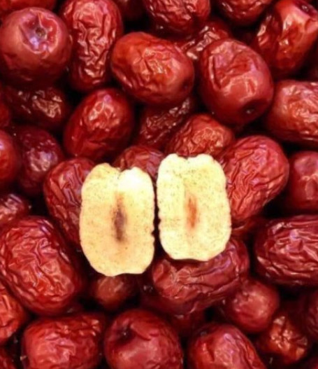
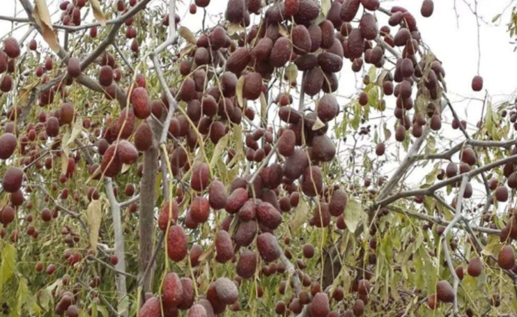
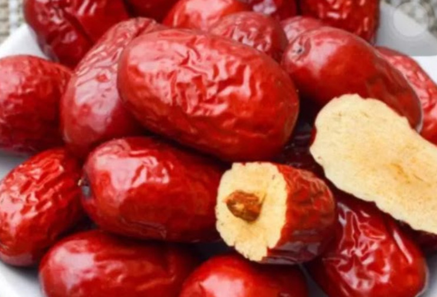
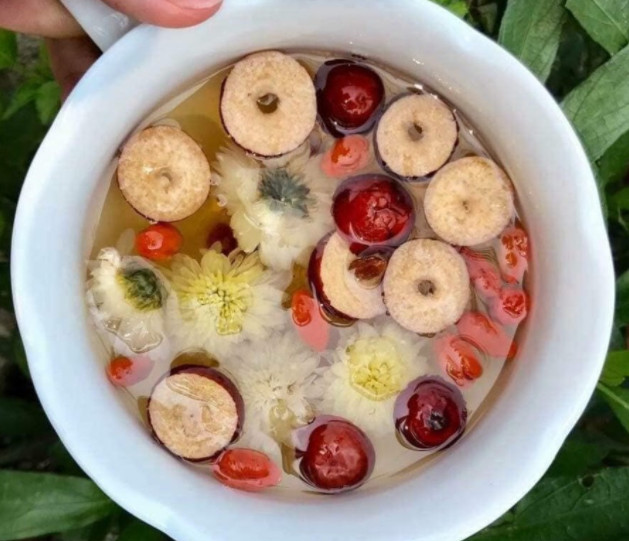
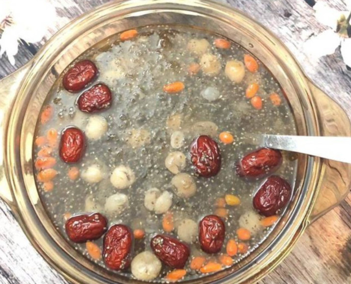

Táo đỏ Tân Cương: Cách dùng, tác dụng¶
Táo đỏ Tân Cương là một trong số loại trái cây được tin dùng, là loại quả rất dễ ăn, với rất nhiều cách chế biến khác nhau. Vậy táo đỏ có tác dụng gì, địa chỉ bán táo đỏ ở đâu, các bạn đã tìm hiểu kĩ về loại thảo dược này chưa?
Trong Đông Y, người ta thường sử dụng táo đỏ như một bài thuốc vừa chăm sóc sức khỏe và sắc đẹp. Loại quả này được sử dụng rất lâu đời với nhiều cách dùng khác nhau.
Nguồn gốc của loại táo đỏ Tân Cương¶
Táo đỏ Tân Cương là loại táo thượng hạn số một của Tân Cương - Trung Quốc. Được bầu chọn là 1 trong hơn 2000 loại táo ngon nhất thế giới, trên cả táo đỏ Hàn Quốc.
Khác với các loại trái cây khác thì khi khô thì cần được sấy, còn riêng với loại táo đỏ này thì khô tự nhiên tại trên cây, ra quả trong thời tiết khắc nghiệt khoảng 40 độ C.
Do nhiệt độ chênh lệch của ngày và đêm tại Tân Cương, ban ngày tại đó kéo dài khoảng 15 giờ, một năm lên đến 200 ngày không sương, nên trái táo khi chín và tự khô trên cây. Sau khi khô khoảng 70-80% thì dùng cây đập thật mạnh vào cành để quả rụng , nên phơi khô thêm vài ngày cho đạt à có thể bảo quản rất lâu, lên đến 3 năm.
Tác dụng của táo đỏ tân cương¶
Táo đỏ tân cương là một trong các loại thực phẩm rất tốt cho chị em phụ nữ trong việc chăm só sắc đẹp , cải thiên sắc tốt da , làm giảm đi quá trình lão hóa,…
Giúp giảm đau cơ, làm giảm cảm giác thèm ăn, hỗ trợ tim mạch, tăng cường trao đổi chất, làm sạch các mạch máu, ức chế các tế bào ung thư, giúp cải thiện táo bón như một loại thuốc nhuận tràng, giảm lo âu, giúp xây dựng cơ bắp, hỗ trợ tiểu đường, tạo cảm giác hưng phấn, cải thiên chứng rối loạn chức năng não.
Cách nhận biết đâu là táo đỏ Tân Cương¶
Táo đỏ Tân Cương mọt trong loại trái khô, vào khoảng thời gian gần đây táo đỏ được ưa chuộng rất nhiều, bởi thế khi mua cần đảm bảo bạn đang mua đúng loại.
Loại táo đỏ chuẩn cần đảm bảo to ngon, cùi dày (cơm dày), hạt bé, thị dẻo ngọt thơm, đặt thịt. Táo chỉ được thu hoạch tại cây, sau quá trình hông khô tại cây ở nhiệt độ rất cao, tuy vậy, vỏ của quả táo tuy nhăn nhưng vẫn phòng to, da của quả có màu đỏ đậm , khác với các loại táo thường khác có nàu đỏ nâu, hạt tròn, thịt khô.
Khá nhiều người tin rằng khi mua hàng xách tay táo đỏ, sẽ mua được hàng mới ngon, chất lượng không phải hàng cũ, hàng tồn. Nhưng nên đảm bảo khi mua cần cân nhắc chọn lựa kỹ lưỡng.
Cách sử dùng táo đỏ Tân Cương thượng hạng¶
Có rất nhiều cách sử dụng táo đỏ Tân Cương, chẳng hạn như cách đơn giản nhất là có thể ăn liền, làm đồ ăn vặt không cần chế biến, hoặc đem ngâm rượu, nấu cháo, pha trà,… đều ích tâm, lợi khí, tốt cho sức khỏe..
Ngâm rượu táo đỏ¶
Táo đỏ có thể ngâm với rượu giúp bổ máu, khi ngâm táo với rượu thì các chất dinh dưỡng từ táo sẽ hòa huyện với rượu, nên khi uống rượu sẽ dễ dàng hấp thụ, duy trì dòng máu trong đông mạch , đồng thời hỗ trợ quá trình tuần hoàn ,giúp quá trình trao đổi chất diễn ra dễ dàng hơn.
Nấu cháo táo đỏ¶
Cháo Táo đỏ giúp an thần, dễ ngủ, khi nấu cháo có thể kết hợp với táo, kỷ tử, hạt sen, cũng có thể bỏ thêm long nhãn. Tất cả các thành phần có trong cháo đều là các bài thuốc, nên đây là món cháo đầy dinh dưỡng giúp an thần, giảm bớt căng thẳng, mệt mỏi, tạo nên giấc ngủ ngon hơn.
Bạn cũng có thể ngâm táo với nước, dùng làm nước uống hằng ngày giúp thanh lọc giải độc gan rất tốt, còn có thể tăng ptotein trong huyết thanh.
Hấp táo đỏ với mộc nhĩ¶
Hấp táo đỏ với mộc nhĩ, đây là món chị em nen dùng vì tác dụng của nó là đẹp da ,sau khi sở chế xong cho táo đỏ đường và mộc nhĩ vào đun trong lữa nhỏ, khoảng 30 phút. Sau khi sử dụng sẽ tăng tính đàn hồi của da, giúp làn da khỏe mạnh hơn, làm giảm các sắc tố như nám, tàng nhan, làm cho da bạn sáng mịn, tươi khỏe.
Pha trà gừng táo đỏ¶
Món trà gừng táo đỏ, với sự kết hợp của táo đỏ Tân Cương, gừng tươi, một ít đường, cho tất cả vào đun với nước sử dụng như một món trà. Rất tốt cho dạ dày, phòng chống và hỗ trợ các bệnh liên quan đến dạ dày.
Nấu chè dưỡng nhan táo đỏ¶
“Chè Dưỡng Nhan” một trong các món chế biến từ táo thì đây là một món chè vừa chăm sóc tốt cho sức khỏe mà còn là món chè chăm dưỡng sắc đẹp rất hiệu quả , khi kết hợp táo đỏ, kỷ tử, tuyết yến, tuyết liên tử, long nhãn,…
Thêm đường phèn hay hạt chia vào món chè giúp chậm quá trình oxy hóa, duy trì sự trẻ trung, món chè rất thích hợp vào mùa hè, sử dụng cho mẹ bầu, người lớn tuổi hay trẻ em đều được.
Mua Táo đỏ Tân Cương ở đâu?¶
Để mua táo đỏ Tân Cương đúng chất lượng loại một, nên tìm hiểu về nơi mua để tránh mua hàng kém chất lượng, có thể mua tại các nhà thuốc đông uy tín như Thảo mộc HHT. Đây là địa chỉ bán táo đỏ Tân Cương uy tín lâu năm tại Hà Nội.
Để mua được loại táo đỏ Tân Cương hảo hạng, chúng tôi đã cung cấp cho bạn một số mẹo nhỏ để nhìn hàng đúng táo chất lượng trong bài viết: “táo đỏ khô giá bao nhiêu”. Mời bạn đọc tham khảo bài viết này để tích lũy kinh nghiệm mua sắm.
Thông tin liên hệ:¶
Thảo mộc HHT
Hotline : 0932.340.345 (Mobi) - 0964.421.551 (Viettel)
Địa chỉ: Nhà 23a ngõ 137 đường Bát Khối, Phường Long Biên, Quận Long Biên, Hà Nội
Giá bán táo đỏ Tân Cương: 200,000 VNĐ/KG¶
Trên đây là bài viết: “Táo đỏ Tân Cương: Cách dùng, tác dụng của táo đỏ Tân Cương”, hy vọng nó đã cung cấp cho bạn những thông tin bổ ích về loại táo thượng hạng này.
Nếu người thân hoặc bạn bè của bạn có nhu cầu mua táo đỏ Tân Cương, hãy chia sẻ bài viết này đến họ nhé!
Táo đỏ, đại táo là một vị thuốc không thể thiếu trong minh mạng thang của chúng tôi. Thang minh mạng được nhiều người dùng và đánh giá chất lượng tốt. Mời các bạn xem video phía dưới
Tổng hợp các video về minh mạng thang¶
https://www.youtube.com/playlist?list=PLejr7_EdIH0ckym84da8girAdIaybLA6d
Note
Liên hệ Hà Toại - Điện thoại, hoặc Zalo số: 0964.421.551 hoặc 0932.340.345
Địa chỉ: Nhà 23a, Ngõ 137 đường Bát Khối, phường Long Biên, quận Long Biên, Hà Nội
Điện thoại: 0932 340 345